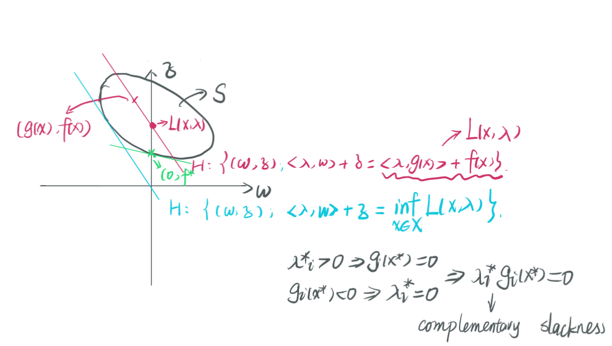

【机器学习笔记】4. Support Vector Machine & Lagrange Duality
整理自同学的笔记
Support Vector Machine
Training data: $ \{ (\mathbf{\mathbf{x}}_i, y ) \} _ {i=1} ^ n$, $y_i \in \mathcal{C} = \{ -1, 1 \}$.
Aim: $f(\mathbf{\mathbf{x}}, \mathbf{w}, b) = b + \sum_{j=1}^d w_j x_j$, s.t. $y_i = \text{sign}(f(\mathbf{\mathbf{x}}_i, w, b))$
SVM for linear separable data
Definition: A training sample is linear separate if there exists $(\hat{\mathbf{w}}, \hat{b})$, s.t. $y_i = \text{sign} (f(\mathbf{\mathbf{x}}_i, \hat{\mathbf{w}}, \hat{b}))$, $\forall i \in [n] = \{1, 2, \cdots, n \}$, which is equivalent to $y_i f(\mathbf{\mathbf{x}}_i, \hat{\mathbf{w}}, \hat{b}) > 0$, $\forall i \in [n]$.

点$\mathbf{\mathbf{x}}_i$到线$ \langle {\bf w}, \mathbf{\mathbf{x}} \rangle + b = 0$的距离$d(\mathbf{\mathbf{x}}_i;\mathbf{w},b) = \dfrac{y_i(\langle \mathbf{w}, \mathbf{\mathbf{x}}_i \rangle + b)}{\Vert \mathbf{w} \Vert_2}$.
$$
\max \limits _ {\mathbf{w}, b} \min \limits _ {\mathbf{\mathbf{x}} _ i \in D} margin(\mathbf{w}, b, D) = \max \limits_{\mathbf{w}, b} \min \limits _ {\mathbf{\mathbf{x}} _ i \in D } d(\mathbf{\mathbf{x}} _ i) = \max \limits _ {\mathbf{w}, b} \min \limits _ {\mathbf{\mathbf{x}} _ i \in D} \dfrac{y_i( \langle\mathbf{w}, \mathbf{\mathbf{x}} _ i \rangle+ b)}{\Vert \mathbf{w} \Vert _ 2}
$$
Assumption 1: Training sample $D = \{ (\mathbf{\mathbf{x}}_i, y_i) \} $, is linear separable.
Definition:
The geometric margin $\gamma_f (\mathbf{z})$ of a linear classifier $f({\bf \mathbf{x}},{\bf w}, b) = \langle {\bf w}, {\bf \mathbf{x}} \rangle + b$ at a point $\mathbf{z}$ is its sigmoid Euclidean Distance to the hyperplane $ \{ \mathbf{\mathbf{x}} : \langle {\bf w}, {\bf \mathbf{x}} \rangle + b = 0\}$.
$$
\gamma_f (\mathbf{z})= \dfrac{y_i(\langle \mathbf{w}, \mathbf{z}_i \rangle + b)}{\Vert \mathbf{w} \Vert_2}
$$
The geometric margin $\gamma_f$ of a linear classifier $f$ for sample $S = \{ {\bf \mathbf{x}}_1, \cdots, {\bf x_n} \}$ is the minimum margin over the points in the sample.
$$
\gamma_f = \min \limits_{i \in [n]} \gamma_f ({\bf \mathbf{x}}_i)
$$
Maximum Margin Classifier
$$
\max \limits_ { {\bf w}, b} \gamma_f = \max \limits_ { {\bf w}, b} \left \{ \frac{1}{\Vert \mathbf{w} \Vert} \min \limits_{i \in [n] } y _ i( \langle \mathbf{w}, \mathbf{\mathbf{x}}_i \rangle + b) \right \}
$$
即
$$
\max \limits _ { {\bf w}, b} \frac{1}{\Vert {\bf w} \Vert}, \\
\text{s.t. } \min \limits _ {i \in [n]} y _ i( \langle \mathbf{w}, \mathbf{\mathbf{x}} _ i \rangle + b) = 1 \\
\Rightarrow y _ i( \langle \mathbf{w} , \mathbf{\mathbf{x}} _ i \rangle + b) \ge 1 \\
\Rightarrow \min \limits_{ {\bf w}, b} \frac{1}{2} \Vert {\bf w} \Vert ^ 2
$$
用反证法可证等号可以取到。
Definition: Given a SVM classifier $\langle \mathbf{w}, \mathbf{\mathbf{x}}_i \rangle + b = 0$, the marginal hyperplanes are determined by $\vert \langle \mathbf{w}, \mathbf{\mathbf{x}}_i \rangle + b \vert = 1$. The support vectors are the data instance on the marginal hyperplanes. （ i.e. $ \{ {\bf \mathbf{x}}_i : | \langle \mathbf{w}, \mathbf{\mathbf{x}}_i \rangle + b \vert = 1 , {\bf \mathbf{x}}_i \in S \} $ ）
Not separable
minimize $\frac{1}{2} \Vert {\bf w} \Vert ^ 2 + C(training \ errors)$
minimize $\frac{1}{2} \Vert {\bf w} \Vert ^ 2 + C(distance \ of\ the \ error \ points \ and \ its \ correct \ position)$
SVM for non-separate cases:
$$
\min \limits _ { {\bf w}, b, \epsilon} \frac{1}{2} \Vert \mathbf{w} \Vert + C \sum _ {i=1} ^ {n} \epsilon_i, \\
\text{s.t. } y_i (\langle \mathbf{w}, \mathbf{\mathbf{x}}_i \rangle + b) \ge 1 - \epsilon_i, i \in [n] \\ \epsilon_i \ge 0, i \in [n]
$$
Lagrange Duality
Consider the problem:
$$
\begin{align}
\min f(\mathbf{x}) \tag{1} \\
\text{s.t. } g_i(\mathbf{x}) & \le 0, i = 1,\cdots,m \\
h_i(\mathbf{x}) & = 0, i = 1,\cdots, p \\
\mathbf{x} & \in X
\end{align}
$$
$f$, $g_i$, $h_i$ are all continously differentiable.
$$
g(\mathbf{x}) = \left [
\begin{matrix}
g_1(\mathbf{x}) \\
\vdots \\
g_m(\mathbf{x})
\end{matrix}
\right],
h(\mathbf{x}) = \left [
\begin{matrix}
h_1(\mathbf{x}) \\
\vdots \\
h_p(\mathbf{x})
\end{matrix}
\right]
$$
Feasible Set: $D = \{ \mathbf{x} : g(\mathbf{x}) \le 0 , h(\mathbf{x}) = 0, \mathbf{x} \in X \}$.
Each $\mathbf{x} \in D$ is called a feasible solution. The optimal function value is $f^* = \inf \limits _ { \mathbf{x} \in D } f(\mathbf{x})$.
Transition from the domain to the image $S = \{ (g(\mathbf{x}), h(\mathbf{x}), f(\mathbf{x})) : \mathbf{x} \in X \}$ （$\dim =m + p + 1 $）
Definition 1: Associated with the primal problem, we define the Lagrangian $L$: $\mathbb{R}^n \times \mathbb{R} ^ m \times \mathbb{R} ^ p \rightarrow \mathbb{R}$.
$$
L(\mathbf{\mathbf{x}}, \lambda, \mu) = f(\mathbf{\mathbf{x}}) + \sum _ {i = 1} ^ m \lambda_i g_i(\mathbf{\mathbf{x}}) + \sum _ {i = 1} ^ p \mu_i h_i(\mathbf{\mathbf{x}})
$$
Definition 2: A vector $ ( \lambda ^ *, \mu ^ *) = (\lambda _ 1 ^ *, \cdots, \lambda_m ^ *, \mu_1 ^ *, \cdots, \mu_p ^ *)$ is said to be a geometric multiplier vector（or simply geometric multiplier）for the primal problem if:
$$
\lambda_i ^ * \ge 0, i = 1, \cdots, m \text{ and } f ^ * = \inf _ {\mathbf{x} \in X} L(\mathbf{\mathbf{x}}, \lambda ^ *, \mu ^ *)
$$
Lemma（Visualization Lemma）:
- The hyperplane with normal $(\lambda, \mu, 1)$ that pass through $(g(\mathbf{\mathbf{x}}), h(\mathbf{\mathbf{x}}), f(\mathbf{\mathbf{x}}))$ intercepts the vertical axis $\{ (\mathbf{0}, z), z \in \mathbb{R} \}$ at the level $L(\mathbf{\mathbf{x}}, \lambda, \mu)$.
- Among all hyperplanes with normal $(\lambda, \mu, 1)$ that contains in their positive half space the set $S$, the highest attained level of interception of the vertical axis is $\inf \limits_ {\mathbf{x} \in X} L(\mathbf{\mathbf{x}}, \lambda, \mu)$.
Proposition: Let $(\lambda ^ *, \mu ^ *)$ be a geometric multiplier. Then $\mathbf{\mathbf{x}} ^ *$ is a global minimum of the primal problem iff $\mathbf{\mathbf{x}} ^ * \in \arg \min \limits _ {\mathbf{\mathbf{x}} \in X} L(\mathbf{\mathbf{x}}, \lambda ^ *, \mu ^ *)$, $ \lambda _ i ^ * g _ i(\mathbf{\mathbf{x}} ^ *) = 0$, $ i = 1, \cdots, m$（complementary slackness）.
Proof:
（$\Rightarrow$）
Suppose $\mathbf{x} ^ *$ is a global minimum. Then $\mathbf{x} ^ *$ must be feasible, and thus
$$
f(\mathbf{x} ^ *) \ge L(\mathbf{x} ^ *, \lambda ^ *, \mu ^ *) \ge f ^ * = f(\mathbf{x} ^ *) + \sum _ {i = 1} ^ m \lambda_i g _ i(\mathbf{x} ^ *) + \sum _ {i = 1} ^ p \mu_i h _ i(\mathbf{x} ^ *)
$$
The definition of $ f ^ * $ leads to $ f ^ * = f(\mathbf{x} ^ * ) $, which implies that
$$
f ( \mathbf{x} ^ * ) = L (\mathbf{x} ^ * ) = f ^ * = \inf \limits _ {\mathbf{x} \in \mathcal{X} } L (\mathbf{x}, \lambda ^ *, \mu ^ *) \\
\Rightarrow \mathbf{x} ^ * = \arg \min \limits _ {\mathbf{x} \in X} L(\mathbf{x}, \lambda ^ *, \mu ^ *) \text{ and } f ( \mathbf{x} ^ *) = L(\mathbf{x} ^ *) = f(\mathbf{x} ^ *) + \sum _ {i = 1} ^ m \lambda_i g _ i(\mathbf{x} ^ *) + \sum _ {i = 1} ^ p \mu_i h _ i(\mathbf{x} ^ *) \\
\Rightarrow \lambda _ i ^ * g _ i(\mathbf{x} ^ *) = 0
$$
（$\Leftarrow$）
$$
f (\mathbf{x} ^ * ) = L(\mathbf{x} ^ *, \lambda ^ *, \mu ^ *) \le L(\mathbf{x} , \lambda ^ *, \mu ^ *) = f(\mathbf{x}) + \sum _ {i = 1} ^ m \lambda_i g _ i(\mathbf{x} ^ *) + \sum _ {i = 1} ^ p \mu_i h _ i(\mathbf{x} ^ *) \le f(\mathbf{x})
$$
Lagrange Duality:
Lagrange Dual Function: $ q(\lambda, \mu) = \inf \limits_ {\mathbf{x} \in X} L (\mathbf{x}, \lambda, \mu)$.
Lagrange Dual Problem: $\max q(\lambda, \mu)$, s.t. $\lambda \ge 0$.
Dual optimal value: $q ^ * = \sup \limits _ { \{ (\lambda, \mu) : \lambda \ge 0 \} } q (\lambda, \mu)$
$\text{dom } q = \{ (\lambda, \mu) : q(\lambda, \mu) > - \infty \}$
convex:
- $\text{dom } q \cap \{ (\lambda, \mu) : \lambda \ge 0 \} $ is convex.
- $-q$ is convex. （$f(\mathbf{x}) = \sup \limits_ {y \in \cal{Y}}l(\mathbf{x},y)$, $l(\mathbf{x},y)$ is convex $\Rightarrow f(\mathbf{x})$ is convex）
Theorem（Week Duality Theorem）: $q ^ * \le f ^ *$
Proof: $\forall (\lambda, \mu), q(\lambda, \mu) = \inf \limits _ {\mathbf{x} \in X} L(\mathbf{x}, \lambda, \mu) \le \inf \limits _ {\mathbf{x} \in D} L(\mathbf{x}, \lambda, \mu) \le f ^ *$
Definition: Consider $f: X \rightarrow Y$
The value $f(x) \in Y$ that it assumes at element $ x \in X$ is called the image of $x$.
The image of a set $A \subset X$ under the mapping $f$ is $f(A) = \{ y \in Y : \exists x \in A, \text{s.t. } f(x) = y \}$.
The preimage of as set $B \subset Y$ is $f ^ {-1} (B) := \{ x \in X : f(x) \in B \}$
eg: $f(X) = \det (A)$, $f(x ^ 2) = 2 x $ .
Definition: A hyperplane $H$ in $ \mathbb{R} ^ {d +1}$ is specified by a linear equation involving a nonzero vector $(\mathbf{u}, u_0)$ （called the normal vector of $H$）, where $\mathbf{u} \in \mathbb{R} ^ d$ and $u_0 \in \mathbb{R}$ and by a constraint $C$ as follows:
$$
H = \{ ({\bf w}, z) : {\bf w} \in \mathbb{R} ^ d, z \in \mathbb{R}, u_0 z + \langle \mathbf{u}, \mathbf{w} \rangle = C \}
$$
Hyperplane defines two half-spaces: the positive half-space $H ^ + = \{ ({\bf w}, z) : {\bf w} \in \mathbb{R} ^ d, z \in \mathbb{R}, u_0 z + \langle \mathbf{u}, \mathbf{w} \rangle \ge C \}$ and the negative half-space $H ^ + = \{ ({\bf w}, z) : {\bf w} \in \mathbb{R} ^ d, z \in \mathbb{R}, u_0 z + \langle \mathbf{u}, \mathbf{w} \rangle \le C \}$.
$$
l({\bf w}, z) = u_0 z + \langle \mathbf{u}, \mathbf{w} \rangle \\
$$

Definition: Duality gap is $f ^ * - q ^ *$.
Proposition:
If there is no duality gap, the set of geometric multipliers is equal to the set of optimal dual solution.
If there is duality gap, the set of geometric multipliers is empty.
Optimality conditions:
A pair $\mathbf{\mathbf{x}} ^ * $ and $ ( \lambda ^ * , \mu ^ * ) $ is an optimal solution and geometric multiplier iff
$$
\mathbf{x} ^ * \in X, g(\mathbf{x} ^ *) \le 0, h(\mathbf{x} ^ * ) = 0. \text{(Primal Feasibility)} \\
\lambda ^ * \ge 0 \text{(Dual Feasibility)} \\
\mathbf{x} ^ * \in \arg \min \limits_ {\mathbf{x} \in X} L(\mathbf{x}, \lambda ^ *, \mu ^ *) \text{(Lagrangian Optimality )} \\
\lambda _ i ^ * g _ i ^ * (\mathbf{x}) = 0, i = 1,\cdots,m \text{(Complementary Slackness)}
$$
Saddle Point Theorem:
A pair $\mathbf{\mathbf{x}} ^ * $ and $ ( \lambda ^ * , \mu ^ * ) $ is an optimal solution and geometric multiplier iff $\mathbf{\mathbf{x}} ^ * \in X$, $\lambda ^ * \ge 0$ and $(\mathbf{\mathbf{x}} ^ *, \lambda ^ *, \mu ^ * ) $ is a saddle point of the Lagrangian. i.e.
$$
L((\mathbf{\mathbf{x}} ^ *, \lambda, \mu) \le L(\mathbf{\mathbf{x}} ^ *, \lambda ^ *, \mu ^ * ) \le (\mathbf{\mathbf{x}}, \lambda ^ *, \mu ^ * ) ), \forall \mathbf{\mathbf{x}} \in X, \lambda \ge 0
$$
Strong Duality Theorem:
Consider the primal problem. Suppose that $f$ is convex , $X$ is a polyhedral, i.e. $X = \{ {\bf \mathbf{x}}: \langle {\bf a} _ i, {\bf \mathbf{x}} \rangle \le b, i = 1, \cdots, r \} $, $g_i$ and $h_i$ are linear and $f ^ * $ is finite. Then there is no duality gap and there exists at least one geometric multiplier （primal and dual problems have optimal solutions）.
SVM & SVM Dual
SVM:
$$
\min _ {\mathbf{w}, b} \frac{1}{2} \Vert {\bf w} \Vert ^ 2 + C \sum _ {i = 1} ^ n \epsilon_i \\
\text{s.t. } y_i ( \langle \mathbf{w}, \mathbf{\mathbf{x}}_i \rangle + b) \ge 1 - \epsilon_i, i = 1, \cdots, n \\
\epsilon_i \ge 0, i = 1, \cdots, n
$$
$$
L(\mathbf{w}, b, \epsilon, \alpha, u) = \frac{1}{2} \Vert \mathbf{w} \Vert ^ 2 + C \sum _ {i = 1} ^ n \epsilon_i + \sum _ {i = 1} ^ n \alpha _ i (1 - \epsilon _ i - y_i ( \langle \mathbf{w}, x_i \rangle + b) ) - \sum _ {i = 1} ^ n u_i \epsilon_i, \alpha \ge 0, u \ge 0
$$
$$
\begin{align}
q(a, u) = & \inf _ {\mathbf{w}, b, \epsilon} L(b, \epsilon, \alpha, u) \\
= & \inf _ {\mathbf{w}} \frac{1}{2} \Vert {\bf w} \Vert ^ 2 - \sum _ {i = 1} ^ n \alpha _ i y_i \langle \mathbf{w}, \mathbf{\mathbf{x}}_i \rangle \\ & + \inf _ {b} b \sum _ {i = 1} ^ n \alpha _ i y _ i \\ & + \inf _ {\epsilon} \sum _ {i = 1} ^ n (C - \alpha _ i - u _ i) \epsilon_i
\end{align}
$$
$$
\begin{align}
\left. \nabla_\mathbf{w} L(\mathbf{w}, b, \epsilon, \alpha, u) \right| _ {\mathbf{w} = \mathbf{\hat{w}}} = 0 & \Rightarrow \mathbf{\hat{w}} - \sum _ {i = 1} ^ n \alpha _ i y _i \mathbf{\mathbf{x}} _ i - 0 \\
\left. \nabla_b L(\mathbf{w}, b, \epsilon, \alpha, u) \right| _ {b = \hat{b}} = 0 & \Rightarrow - \sum _ {i = 1} ^ n \alpha_i y _i = 0 \\
\left. \nabla_\epsilon L(\mathbf{w}, b, \epsilon, \alpha, u) \right| _ {\epsilon = \hat{\epsilon}} = 0 & \Rightarrow C - \alpha_i - u _ i = 0
\end{align}
$$
$$
\max q(\alpha, u) = - \frac{1}{2} \sum _ {i =1} ^ n \sum _ {j = 1} ^ n \alpha_i \alpha_j y_i y _ j \langle {\bf \mathbf{x}} _ i, {\bf \mathbf{x}} _ j \rangle + \sum _ {i = 1} ^ n \alpha _ i \\
\text{s.t. } \sum _ {i = 1} ^ n \alpha_i y _i = 0 , \alpha _ i \ge 0 \\
C - \alpha_i - u _ i = 0, u_i \ge 0
$$
SVM Dual:
$$
\max q(\alpha)
\text{s.t. } \sum _ {i = 1} ^ n \alpha _ i y _ i = 0 \\
\alpha _ i \in [0, C], i = 1, \cdots, n
$$
Proposition:
Let $\alpha ^ * $ be one of the dual optimal solutions.
$$
\mathbf{w} ^ * = \sum _ {i = 1} ^ n \alpha _ i ^ * y _ i \mathbf{\mathbf{x}} _ i \\
\alpha _ i (1 - \epsilon _ i - y_i ( \langle \mathbf{w}, \mathbf{\mathbf{x}}_i \rangle + b) ) = 0, \forall i \text{(Complementary Slackness)}
$$
$ \alpha _ k ^ * $ is one of the entries of $\alpha ^ *$ and $ \alpha _ k ^ * \in (0, C) $, then:
$$
(1 - \epsilon _ i - y_i ( \langle \mathbf{w}, x_i \rangle + b) ) = 0 \\
\alpha _ k ^ * \in (0, C) \Rightarrow u_k ^ * \in (0, C) \Rightarrow \epsilon _ k ^ * = 0 \\
b ^ * = y _ k - \langle {\bf w} ^ *, {\bf \mathbf{x} _ k} \rangle
$$